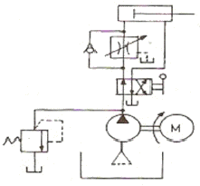
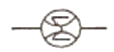
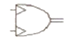
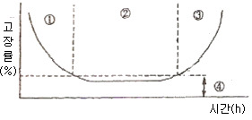
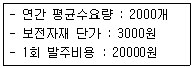
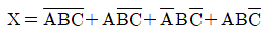
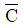
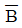
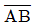

기계정비산업기사 (2011-03-20 기출문제)
1과목: 공유압 및 자동화시스템
1. 방향제어밸브의 구조에 의한 분류에 해당되지 않는 것은?
- 포핏 형식
- 로터리 형식
- 파일럿 형식
- 스풀 형식
(정답률: 72%)

2. 오일탱크의 바닥면과 지면의 최소 유지 간격으로 가장 바람직한 것은?
- 50mm
- 150mm
- 250mm
- 350mm
(정답률: 81%)
3. 공압 모터의 장점이 아닌 것은?
- 회전 방향을 쉽게 바꿀 수 있다.
- 회전 속도와 관계없이 일정한 공기를 소모한다.
- 속도 조절 범위가 크다.
- 과부하에 대하여 안전하다.
(정답률: 69%)
4. 다음 그림의 회로 명칭으로 맞는 것은?

- 미터-인 회로
- 미터-아웃 회로
- 브리드 -오프회로
- 블리드-온 회로
(정답률: 81%)
5. 다음 중 조작력이 작용하지 않는 때의 밸브 몸체의 위치로서 맞는 것은?
- 중앙위치
- 초기위치
- 노멀위치
- 중간위치
(정답률: 77%)
6. 다음 기호의 명칭으로 맞는 것은?

- 적산 유량계
- 회전속도계
- 토크계
- 유면계
(정답률: 82%)
7. 공압기기 중 소음기에 대한 설명으로 맞는 것은?
- 배기 속도를 빠르게 한다.
- 공기 흐름에 저항이 부여되고 배압이 생긴다.
- 공압기기의 에너지 효율이 좋아진다.
- 공압 작동부의 출력이 커진다.
(정답률: 75%)
8. 1표준기압은 수은주 760mmHg이다. 상온의 물이라면 이것의 수주는 약 얼마인가?
- 0.76m
- 1.034m
- 7.6m
- 10.34m
(정답률: 67%)
9. 공기 압축기로부터 애프터 쿨러 또는 공기탱크까지 연결라인이며 고온 고압과 진동이 수반되는 부분은?
- 흡입라인
- 이송라인
- 토출라인
- 제어라인
(정답률: 77%)
10. 단단 베인 펌프 2개를 1개의 본체 내에 직렬로 연결시킨 펌프로 고압의 대출력이 요구되는 액추에이터의 구동에 적합한 펌프는?
- 2단 베인펌프
- 단단 베인펌프
- 2연 베인펌프
- 복합 베인펌프
(정답률: 76%)
11. 서보량(위치, 속도, 가속도 등)을 정밀하게 제어한 서보제어계에 사용되는 서보센서의 종류가 아닌 것은?
- 열전대
- 포텐쇼미터
- 타코미터
- 리졸버
(정답률: 73%)
12. 다음 중 기름이 누설되는 원인이 아닌 것은?
- 배관 재질이 불량한 경우
- 밸브의 작동이 불량한 경우
- 배관 접속법이 불량한 경우
- 실(seal)이 불량한 경우
(정답률: 60%)
13. 기기 간 접속보다 단지 액추에이터의 동작순서를 표시하는 것은?
- 논리도
- 래더 다이어그램
- 변위-단계선도
- 기능선도
(정답률: 80%)
14. 설비의 신뢰성을 나타내는 척도 중 MTBF는 무엇을 의미하는가?
- 평균고장 수리시간
- 평균고장 간격시간
- 고장률
- 고장설비 수
(정답률: 80%)
15. 직류전동기 과열의 원인이 아닌것은?
- 전동기 과부하
- 퓨즈의 융단
- 스파크
- 베어링 조임과다
(정답률: 68%)
16. 다음의 기호가 나타내는 것은?

- 요동형 공기압 펌프
- 요동형 공기압 모터
- 요동형 공기압 압축기
- 요동형 공기압 실린더
(정답률: 58%)
17. 유압 선형 액추에이터에 대한 설명으로 틀린 것은?
- 비압축성 유체를 사용한다.
- 정밀한 속도제어가 가능하다.
- 온도의 변화에 따라 유체의 점도 변화가 심하다.
- 빠른 속도가 필요한 곳에 유용하다.
(정답률: 53%)
18. 공압 요동형 액추에이터 중 피스톤 로드에 기어의 형상이 있으며 피스톤의 직선 운동을 피니언으로 회전 운동으로 변화시키는 것은?
- 베인 실린더
- 회전실린더
- 공압 모터
- 터빈 모터
(정답률: 78%)
19. PLC의 성능이나 기능을 결정하는 중요한 프로그램으로 PLC 제작회사에서 직접 ROM에 써 넣는 것은?
- 데이터 메모리
- 시스템 메모리
- 수치연산 제어 메모리
- 사용자 프로그램 메모리
(정답률: 71%)
20. 제어시스템에서 제어를 행하는 과정에 따른 분류 중 설명이 틀린 것은?
- 파일럿제어 - 메모리 기능이 없고 이의 해결을 위해 불논리 방정식을 이용한다.
- 메모리제어- 출력에 영향을 줄 반대되는 입력신호가 들어올 때까지 이전에 출력된 신호는 유지된다.
- 시퀸스제어- 이전단계 완료여부를 센서를 이용하여 확인 후 다음단계의 작업을 수행한다.
- 조합제어- 요구되는 입력 조건에 관계없이 그에 관련된 모든 신호가 출력된다.
(정답률: 76%)
2과목: 설비진단관리 및 기계정비
21. 설비종합효율은 개별설비의 종합적 이용효율이다.TPM에서의 종합효율을 측정하는 지수가 아닌 것은?
- 에너지 효율
- 시간 가동률
- 성능 가동율
- 양품율
(정답률: 75%)
22. 원활한 보전을 위하여 보전용 자재의 일부를 상비품으로 준비하고자 한다. 상비품으로 고려할 사항이 아닌 것은?
- 여러 공정의 부품에 공통적으로 사용되는 부품
- 사용량이 많고 계속적으로 사용되는 부품
- 단가가 비싼 부품
- 보관상(중량,변질 등)지장이 없는 부품
(정답률: 87%)
23. 새 펌프를 구입하여 설치 후 시험가동 중에 축봉부에 누설이 생겨 목표한 양정으로 올리지 못하여 메카니컬실(Mechanicalseal)을 교체하여 가동하였다. 아래 그림에서 어느 구역의 고장기에 해당하는가?

- ① 구역
- ② 구역
- ③ 구역
- ④ 구역
(정답률: 70%)
24. 설비진단 기술의 도입 시 나타나는 일반적인 효과와 관련이 적은 것은?
- 진단기기를 사용하면 보다 정량화 할 수 있으므로 쉽게 이상측정이 가능하다.
- 경향관리를 통하여 설비의 수명 예측이 가능하다.
- 중요 설비 부위를 상시 감시함에 따라 돌발사고를 미연에 방지할 수 있다.
- 열화가 심한 설비에 효과적이며 오감에 의한 진단이 일반적이다.
(정답률: 83%)
25. 정현파 신호의 진동 파형에서 중심으로부터 제일 높은 부분의 최대값의 진동 크기를 나타내는 것은?
- 편진폭
- 양진폭
- 실효값
- 평균값
(정답률: 53%)
26. 진동 측정 시 주의해야 할 점이 아닌 것은?
- 진동계를 바꿔 가면서 측정한다.
- 항상 동일한 장소를 측정한다.
- 항상 동일한 방향으로 측정한다.
- 언제나 같은 센서를 사용한다.
(정답률: 86%)
27. 설비의 경제성 평가 방법 중 설비의 내구 사용 기간 사이의 자본비용과 가동비의 합을 현재 가치로 환산하여 내구 사용기간 중의 연평균 비용을 비교함여 대체 안을 결정하는 방법은?
- 자본 회수법
- 평균 이자법
- 연평균 비교법
- 자본회수 기간법
(정답률: 80%)
28. 두 물체의 고유진동수가 같은 때 한 쪽을 울리면 다른쪽도 울리는 현상은?
- 음의 지향성
- 공명
- 맥동율
- 보강 간섭
(정답률: 81%)
29. 프로세스형 설비의 로스는 9대 로스로 구분된다. 그 중 이론사이클 시간과 실제사이클 시간의 차이를 나타내는 것은 어떤 로스를 말하는가?
- 계획정지로스
- Shutdown로스
- 순간정지로스
- 속도저하로스
(정답률: 70%)
30. 흡진 재료인 화이버 그라스(fiberglass)에 대한 설명 중 옳은 것은?
- 습기를 흡수하려는 성질이 있다.
- 강성은 밀도에 따라 결정되지 않는다.
- 강성은 파이버의 직경과 상관 없다.
- 모세관이 소량 포함되어 있다.
(정답률: 69%)
31. 설비진간 기법 중 진동법으로 알 수 없는 것은?
- 송풍기의 언밸런스(unbalence)
- 베어링의 결함
- 플라이 휠(flywheel)의 언밸런스(unbalence)
- 윤활유에 포함된 이물질의 양
(정답률: 81%)
32. 윤활유의 열화 방지법이 아닌 것은?
- 고온은 가능한 피한다.
- 기름의 혼합사용은 극력 피한다.
- 신 기계 도입 시는 충분히 세척 후 사용한다.
- 교환 시는 열화유를 조금 남기고 교환한다.
(정답률: 84%)
33. TPM의 활동에 관계없는 것은?
- 설비에 관계하는 사람은 빠짐없이 참여한다.
- 작업자를 보전 전문요원으로 활용한다.
- 설비의 효율화를 저해하는 로스(loss)를 없앤다.
- 계획보전체제를 확립한다.
(정답률: 76%)
34. 집중보전의 장점을 설명한 것 중 거리가 먼 것은?
- 대 수리가 필요할 때 충분한 인원을 동원할 수 있다.
- 자본과 새로운 일에 대하여 통제가 보다 확실하다.
- 작업 표준을 위한 시간 손실이 적다.
- 보전 요원의 기능향상을 위해 훈련이 보다 잘 행하여진다.
(정답률: 47%)
35. 대부분의 설비는 어느 기간 동안 수명을 유지한다. 그러다 어느 기간이 지나면 설비가 고장 나기 시작한다. 다음 중 초기고장기와 우발고장기가 지난 후 마모고장기에 발생하는 고장 원인과 가장 거리가 먼 것은?
- 열화에 의한 고장
- 부품들 간의 변형
- 불충분한 오버홀
- 부적절한 설비의 설치
(정답률: 79%)
36. 기계진동의 가장 일반적인 원인으로서 진동 특성이 1f성분이 탁월한 회전기계의 열화 원인은? (단.f=회전주파수)
- 미스얼라인먼트
- 언밸런스
- 기계적 풀림
- 공진
(정답률: 75%)
37. 다음 중 설비관리의 기능과 가장 관계가 먼 것은?
- 일반관리 기능
- 기술 기능
- 개발 기능
- 실행 기능
(정답률: 74%)
38. 모세관 현상을 이용하여 윤활 시키며 윤활유를 순환시켜 사용하는 급유 방법은?
- 손 급유법
- 가시 부상 유적 급유법
- 패드 급유법
- 적하 급유법
(정답률: 71%)
39. 어떤 보전자재의 연간 자료가 다음과 같다.경제적 주문량은 얼마인가?

- 152
- 164
- 203
- 244
(정답률: 58%)
40. 다음 중 기능별 설비배치의 특징에 대한 설명으로 맞지 않는 것은?
- 다품종 소량생산 형태로서 불규칙한 비율로 생산한다.
- 다품종 대량의 원자재 재고,재고품이 발생한다.
- 운반거리가 길고 운반형식이 다양하다.
- 공간 활용이 효과적이고 단위면적당 생산량이 높다
(정답률: 45%)
3과목: 공업계측 및 전기전자제어
41. J-K플립플롭에서 J=1,K=1이면 동작의 상태는?
- 변하지 않음
- set상태
- 반전
- reset상태
(정답률: 71%)
42. 변위를 전압으로 변환하는 장치는?
- 서미스터
- 노즐 플래퍼
- 차동 변압기
- 벨로우즈관
(정답률: 79%)
43. 회전자에 슬립링을 설치하고 외부에 기동저항을 접속하여 기동전류를 제한하는 전동기는?
- 농형 유도전동기
- 권선형 유도전동기
- 단상 유도전동기
- 반발 유도전동기
(정답률: 69%)
44. 다음 유량계 중 부자(float)의 이동으로 유로면적을 변화시켜 차압을 일정하게 유지하여 유량을 측정하는 유량계는?
- 차압식 유량계
- 면적식 유량계
- 용적식 유량계
- 터빈식 유량계
(정답률: 58%)
45. 60[Hz],4극 유도전동기의 회전자 속도가 1728[rpm]일 때, 슬립은 얼마인가?
- 0.04
- 0.⑤
- 0.08
- 0.10
(정답률: 65%)
46. 직류 발전기에서 계자철심에 잔류 자기가 없어도 발전할 수 있는 발전기는?
- 분권 발전기
- 복권 발전기
- 직권 발전기
- 타여자 발전기
(정답률: 75%)
47. %오차가 -2%인 전압계로 측정한 값이 100[V] 라면 그 참 값은 양 몇[V]인가?
- 98
- 102
- 104
- 106
(정답률: 71%)
48. 일전적인 회로시험기(multitester)로 직접 측정할 수 없는 것은?
- 교류전압
- 직류전압
- 직류전력
- 직류전류
(정답률: 61%)
49. 다음 중 공기식 조작기는?
- 다이어프램 밸브
- 전자밸브
- 전동밸브
- 서보전동기
(정답률: 76%)
50. 교류 기전력과 전류의 크기를 나타내는 값이 아닌 것은?
- 순시값
- 최대값
- 파고값
- 실효값
(정답률: 62%)
51. 다이오드에 역방향 바이어스를 걸어줄 때 어느 한도 이상의 역방향 바이어스를 넘어서면 전류가 급속히 증가하고 전압이 일정하게 된다.이러한 특성으로 인해 정전압 회로에 매우 중요한 다이오드는?
- 제너 다이오드
- 쇼트키 다이오드
- 가변용량 다이오드
- 터널 다이오드
(정답률: 79%)
52. 6극 유도 전동기에 60[Hz]의 교류 전압을 가하면 동기 속도[rpm]는?
- 1800
- 3600
- 2400
- 1200
(정답률: 50%)
53. 기준량을 측정량에 평형시켜 측정하는 방식은?
- 편위법
- 영위법
- 치환법
- 보상법
(정답률: 60%)
54. 이상적인 연산증폭기가 갖추어야 할 조건 중 틀린 것은?
- 입력저항은 무한대이다.
- 출력저항은 0이다.
- 전압 이득은 무한대이다.
- 동위상 신호 제거비는 0이다.
(정답률: 63%)
55. 다음과 같은 범위(0.1~10[Ω])의 저항을 측정할 때 가장 적합한 계기는?
- 절연저항계
- 코올라시 브리지
- 캘빈더블 브리지
- 휘트스톤 브리지
(정답률: 61%)
56. PLC기본 모듈(CCU)의 구성이 아닌 것은?
- 전원부
- A/D변환부
- CPU
- 입출력부
(정답률: 70%)
57. 다음 중 PLC의 특징이 아닌 것은?
- 설비의 변경,확장이 쉽다.
- 제어반 설치면적이 크다.
- 안전성,신뢰성이 높다.
- 노이즈에 대한 대책이 필요하다.
(정답률: 71%)
58. 전기로의 온도를 900[℃]로 일정하게 유지시키기 위하여 열전온도계의 지시값을 보면서 전압 조정기로 전기로에 대한 인가전압을 조절하는 장치가 있다. 이 경우 열전온도계는 다음 중 어디에 해당하는가?
- 제어량
- 외란
- 목표값
- 검출부
(정답률: 57%)
59. 논리식

를 간략화 하면?
- A


(정답률: 58%)
60. 피드백 제어계에서 제어요소를 나타낸 것으로 가장 알맞은 것은?
- 검출부와 조작부
- 조절부와 조작부
- 검출부와 조절부
- 비교부와 검출부
(정답률: 73%)
4과목: 기계정비 일반
61. 플랙시블 커플링을 사용하는 이유로 적합하지 않는 것은?
- 두 축의 중심을 완전히 일치시키기 어려울 때
- 전달토크의 변동으로 축에 충격이 가해질 때
- 고속회전으로 인한 진동을 완화 시킬 때
- 두 축의 동력을 일시적으로 멈추고자 할 때
(정답률: 65%)
62. 펌프에 관한 설명 중 올바른 것은?
- 다단 펌프는 유량을 증가시킨다.
- 양흡입 펌프는 양정을 증가시킨다.
- 양흡입펌프는 축추력이 발생되지 않는다.
- 축방향으로 유체를 흡입하고 반경방향으로 토출시키는 펌프는 축류식 펌프이다.
(정답률: 43%)
63. V벨트의 특징이 아닌 것은?
- 속도비가 큰 경우의 동력전달에 좋다.
- 고속운전을 시킬 수 있다.
- 벨트가 잘 벗겨진다.
- 이음이 없어 전체가 균일한 강도를 갖는다.
(정답률: 80%)
64. 로크너트는 무엇을 방지하기 위한 것인가?
- 부식
- 풀림
- 고착
- 파손
(정답률: 83%)
65. 사이클로이드 감속기의 윤활 방법 중 옳은 것은?
- 1kw이하의 소형에는 적하급유 방법,그 이상의 것은 그리스가 사용된다.
- 1kw이하의 소형에는 그리스,그 이상의 것은 적하급유 방법이 쓰인다.
- 1kw이하의 소형에는 유욕(油慾)윤활방법,그 이상의 것은 그리스가 사용된다.
- 1kw이하의 소형에는 그리스,그 이상의 것은 유욕(油慾) 윤활법이 쓰인다.
(정답률: 63%)
66. 전동기 베어링 부분에서 발열이 발생할 때 주요 원인이 아닌 것은?
- 베어링의 조립불량
- 벨트의 장력과대
- 커플링 중심내기 불량
- 전동기 입력전압의 변동
(정답률: 68%)
67. 펌프의 원리 구조상 분류 시 용적형 회전 펌프가 아닌 것은?
- 기어펌프
- 베인펌프
- 터빈펌프
- 나사펌프
(정답률: 53%)
68. 압력이 포화 수증기압 이하로 낮아지면서 기포가 발생하는 현상을 무엇이라 하는가?
- 캐비테이션
- 수격현상
- 채터링현상
- 교축현상
(정답률: 73%)
69. 축의 급유불량으로 나타나는 현상은?
- 조립불량
- 축의 굽힘
- 강도부족
- 베어링 발열
(정답률: 68%)
70. 버니어캘리퍼스의 사용상 주의점이 아닌 것은?
- 측정 시 측정 면의 이물질을 제거한다.
- 눈금을 읽을 때 눈금으로부터 직각위치에서 읽는다.
- 측정 시 본척과 부척의 영점 일치여부를 확인한다.
- 정압 장치가 있으므로 측정력은 제한이 없다.
(정답률: 82%)
71. 다음 중 바셀린 방청유로서 막의 성질에 따른 분류로 맞는 것은?
- KP-1
- KP-2
- KP-3
- NP-4
(정답률: 68%)
72. 다음 중 감압밸브를 바르게 설명한 것은?
- 밸브의 양면에 작용하는 온도차로 자동적으로 작동
- 피스톤의 왕복운동에 의한 유체의 역류를 자동적으로 방지
- 유체압력이 높을 경우 자동적으로 압력이 감소
- 내약품,내열,고무제의 격막 판을 밸브시트에 밀어 붙인 밸브
(정답률: 73%)
73. 다음 기어 손상의 분류 중 피칭과 관련이 있는 것은?
- 소성항복
- 융착
- 표면피로
- 마모
(정답률: 66%)
74. 기계의 조립작업 시 주의사항으로 잘못 된 것은?
- 무리한 힘을 가하여 조립하지 말 것
- 접합면에 이물질이 들어가지 않도록 할 것
- 볼트와 너트는 균일하게 체결할 것
- 정밀기계는 장갑을 착용하고 작업 할 것
(정답률: 82%)
75. 송풍기 기동 후 베어링의 온도가 급상승하는 경우 점검사항이 아닌 것은?
- 윤활유의 적정 여부
- 미끄럼 베어링은 오일링의 회전이 정상인지 여부
- 댐퍼 및 베인 콘트롤 장치의 개폐조작이 원활한지 여부
- 관통부에 펠트[felt]가 쓰이는 경우,축에 강하게 접촉되어 있는지 여부
(정답률: 55%)
76. 신축이음(flexiblejoint)을 하는 이유로 부적당한 것은?
- 온도 변화에 따라 열팽창에 대한 관의 보호
- 열 영향으로부터 관을 보호
- 작업이 용이하고 설치 및 분해가 쉬워 관을 보호
- 매설관 등 지반의 부동침하에 따른 관의 보호
(정답률: 54%)
77. 토출관이 짧은 저 양정 펌프(전 양정 약 10m이하)에서 사용되는 역류방지 밸브는?
- 게이트 밸브
- 푸트 밸브
- 플랩 밸브
- 슬루스 밸브
(정답률: 54%)
78. 펌프의 수격현상의 방지책으로 옳지 않는 것은?
- 플라이휠 장치 사용
- 서지 탱크 설치
- 관로의 부하 발생점에 공기 밸브 설치
- 관로의 지름을 작게 하여 관내 유속을 증가시킴
(정답률: 74%)
79. 펌프의 부식작용 요소로 맞지 않는 것은?
- 온도가 높을수록 부식되기 쉽다.
- 유체 내의 산소량이 많을수록 부식되기 쉽다.
- 유속이 느릴수록 부식되기 쉽다.
- 재료가 응력을 받고 있는 부분은 부식되기 쉽다.
(정답률: 71%)
80. 수도,가스,배수관 등에 주철관을 많이 사용한다. 주철관이 강관에 비하여 우수한 점은?
- 내식성이 우수하고 가격이 저렴하다.
- 충격에 강하고 수명이 길다.
- 비중이 적고 놓은 내압에 잘 견딘다.
- 내약품성,열전도성,용접성이 좋다.
(정답률: 78%)